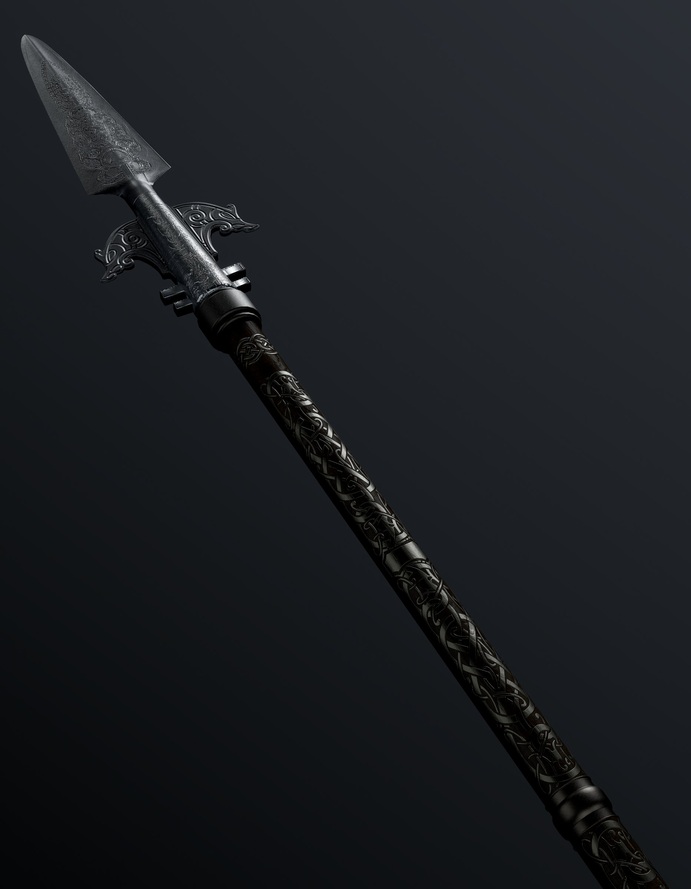

God Of War
Midgard
Midgard İskandinav mitolojisinde ölümlülerin yaşadığı Dünya'nın adıdır. Çoğu dilde adı farklıdır örneğin Eski Nors diline özgün adı Miðgarðr, Orta İngilizce dilindeki adları
Middellærd veya Middel-erde ve çoğu İskandinav dillerinde Midgård ve Mittilagart gibi isimlerle anılmıştır. Anlamı ise orta dünya demektir. Etrafı kimsenin geçemeyeceği bir
okyanusla çevrili olup, Yggdrasil'in ortasında bir yerlerde olduğu söylenir ve hatta Midgardı çevreleyen okyanusun derinliklerinde Jormungand isimli büyük bir deniz canavarının
yaşadığına inanılırdı. Yggdrasil İskandinav mitolojisinde önemli rol oynayan, dokuz diyarı birbirine bağladığına inanılan devasa bir mitolojik ağaçtır. Devasa bir dişbudak ağacı
olarak tasvir edilen Yggdrasil, evrenin merkezindeki çok kutsal bir ağaç olarak kabul edilir. İsminin anlamı Ygg'in atı'dır. Bunun kökeni diğer bir ismi Ygg olan Odin'in dokuz
gün ve gece bu ağacın dallarına asılıp runların sırlarını öğrenmesidir.
Odin
Odin, Cermen mitolojisinde yer alan önemli bir tanrıdır. Odin ile ilgili günümüze ulaşan çoğu bilginin kaynağı olan İskandinav mitolojisi; Odin'i bilgelik,
şifa, ölüm, kraliyet, bilgi, savaş, zafer, büyücülük, şiir, çılgınlık, şamanlık, ilham, şairlik, hava, rüzgar ile ilişkilendirir.
İskandinav mitolojisine göre tanrıça Frigg'in kocasıdır. Genellikle en yüce Cermen tanrısı olarak kabul edilir. Eski İngilizce ve Eski Saksoncada Wōden,
Eski Felemenkçede Wuodan ve Eski Yüksek Almancada Wuotan adıyla bilinir.Tüm bu adların kökeni ise Ana Almanca *Wōđanaz'dır. İngilizce dahil birçok Cermen
dilinde çarşamba günü (İngilizce: Wednesday), bu tanrının adını taşır.

Gungnir
Cennetin Mızrağı olarak da bilinen Gungnir, Odin'in imza silahıdır.
Cüce Dvalin'in emriyle Huldra kardeşler Brok ve Sindir tarafından yapıldı.
Gungnir, Odin savaşta olmadığında bir bastonada dönüşebilir.
Gungnir Odin'in en tutarlı ve güçlü silahıdır. Bir tanrının silahından bekleyeceğiniz gibi
, Gungnir sıradan bir mızrak değikl. Tanrıların en büyüük hazinelerinin nasıl yapıldığına dair hikayede anlatıldığı gibi
Freyr
Freyr, İskandinav mitolojisi ve İskandinav paganizmindeki en önemli tanrılardan birisidir. Güney Cermenlerindeki adı Froh'tur.
Fallik bereket tanrısı olarak tapılan Freyr'in fanilere barış ve zevk bahşettiğine inanılmaktaydı. Yağmuru, güneşin parlayışı ve tarım ürünlerini yönetirdi.
Odin'le aynı unvanlara sahip olduğundandan onun başka bir formu olduğu da öne sürülür.Vanir'den birisi olan Freyr,
deniz tanrısı Njord'ün oğlu ve Freyja'nın erkek kardeşiydi. Dokuz diyardan Işık Elfleri'nin ülkesi Alfheim'in yöneticisidir.
Ragnarök'te Surtr tarafından öldürülecek ama daha sonra tekrar dirilecek ve yeni dünyada önemli bir rol oynayacak.
İngrid
Ingrid , bir zamanlar Vanir Tanrısı Freyr'e ait olan ama sonunda Odin'in eline geçen duyarlı bir kılıçtır .
Daha sonra Asgard'ı ziyaret ettiğinde Loki'ye verir . Daha sonra Ingrid, kılıcın kendisinin en son Ragnarök'ün devasa
kılıcına çarptığı yerde görüldüğü Ragnarök sırasında Freyr'e geri döner .Kılıcın kendisinin bir adı yoktur,
sadece Freyr'in Kılıcı olarak anılır. Güneş ışığı, yaz ve güzel hava ile ilişkilendirilen bir İskandinav tanrısı
olan Freyr'e ait olan kılıç, kendi başına savaşabilen birkaç silahtan biri olarak tasvir edilmiştir.